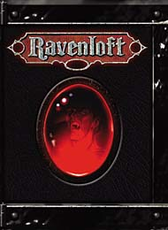
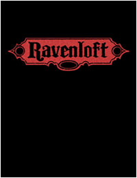
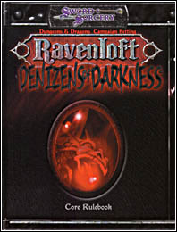
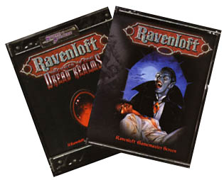
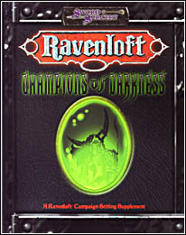
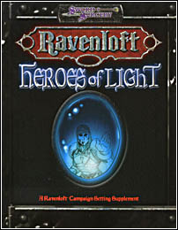
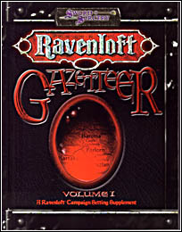
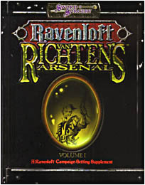
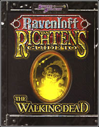

魔域的3E书籍由Sword&Sorcery出版，Sword&Sorcery是白狼公司（White Wolf）下属的一个D20出版机构，制作过许多基于D20或DND的游戏，它旗下的一家小型出版公司Arthaus从WotC那里搞到了魔域传奇的三版DND规则战役设定的授权
首先是最重要的一本：
《魔域传奇战役设定（三版）》（Ravenloft 3rd Edition）

白狼还出版了一个Limited Edition，居然比原版贵一倍（$59.95）

这是三版魔域传奇的核心设定集，把旧版魔域传奇的数据升级到3E……虽然是由白狼出版的，但白狼保证不会把它搞成一个新的"黑暗世界"（World of Darkness），会忠实于第二版的战役背景…………
《黑暗中的住民》（Denizens of Darkness ）

魔域传奇自己的怪物手册，里面的资料主要是由三本Ravenloft monstrous compendiums（2版）转来的…………
《恐怖国度的秘密》（Secrets of the Dread Realms ）

这本扩展设定中包括了一个Ravenloft的DM''s screen（嗯……这是无用的废话……），书中有个新的进阶职业：the Witch-Hunter, 还有20多个NPC的数据，包括几乎所有核心魔域的领主的资料…………@___@…………强烈推荐…………
《黑暗霸主》（Champions of Darkness）

《光明英雄》-____-b（Heroes of Light）

这两本书似乎是成套的，分别介绍迷雾之地里邪恶和善良双方的英雄和名人，还有进阶职业，秘密组织，NPC…………
《魔域国家地理杂志（I，II，III》（Ravenloft Gazetteer - Volume One、Volume Two 、Volume Three ）

介绍迷雾之地的风土人情，分三册，第一册里包括Barovia, Kartakass, Hazlan,Forlorn
第二册包括Darkon, Necropolis, Falkovnia, Lamordia，第三册包括Dementlieu, Mordent and Richemulot………………
Ravenloft Dungeon Master's Guide、Ravenloft Tarokka Deck，今年即将出版…………
另外， Ravenloft的扩展设定里还包括一一大堆Van Richten Guides（Van Richten是著名的狩魔猎人凡・瑞查恩医生……）
其中使用二版规则的（最晚都是95年出版的）有：
VRG to Vampires
VRG to Ghosts
VRG to the Lich
VRG to Werebeasts
VRG to the Created
VRG to the Ancient Dead
VRG to Fiends
VRG to the Vistani
这些似乎都被收录于三本Van Richten's Monster Hunter Compendium里了……
新出的三版设定，也就是白狼出的，有两本：
《凡・瑞查恩的阿森纳队！》^^（Van Richten's Arsenal）

《凡・瑞查恩带你走向死亡！》*^-^*（Van Richten's Guide to the Walking Dead ）

关于一些不死生物的研究（skeletons, zombies, ghouls, wights之类的废柴……）